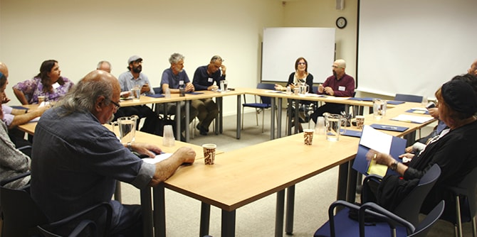
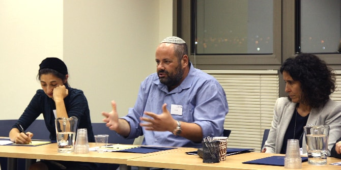

כחלק משיתוף פעולה פורה בין עיריית באר שבע למרכז מנדל למנהיגות בנגב, מתקיימים לראשונה מפגשים של קבוצת משימה הפועלת מתוך שאיפה לתרום לשגשוגה של חברה אנושית ערכית בנגב ולהפוך את החיים בבאר שבע ובנגב למשמעותיים יותר, מגוונים ועשירים יותר ברוח. במפגשים אלו, שמובילים
ד"ר חפצי זוהר,
ישראל שורק וד"ר עדי ניר שגיא, משתתפים אנשי דעת ומעשה מובילים ממגוון תחומי פעולה, בהם רפואה, חינוך, דת, תקשורת, תרבות וקהילה.

במפגש הראשון דנו המשתתפים במוטיבציה המניעה אותם לפעול בקבוצה ובצורך לחזק את הרוח בעשייתם היומיומית דרך המשגות שבין מועקה לתקווה. הקבוצה קראה יחד מתוך הטקסט הקלאסי של עמנואל קאנט "מהי נאורות", כבסיס להמשך דיון ושיח על קידום הרוח ו"עשיית רוח" במציאות בתוך מערכות החיים השונות.
במפגש השני הציגו כמה מחברי הקבוצה קטעים שבחרו – טקסטים ויצירה מוזיקלית – שעל בסיסם פיתחו שיח על היבטים שונים של רוח האדם, בין יחיד לזולת. אחר כך הרצתה שלומית נעים נאור, אשת חינוך ומשוררת, עמיתה בבית ספר מנדל למנהיגות חינוכית, והציגה חלקים מהפרויקט שלה "אמני הבית". שלומית דנה עם המשתתפים על יכולתה של האמנות להיטיב את תנאי החיים של האדם והקהילה. המפגש נחתם בעבודה במעגלי שיחה שהתמקדו בשאלה כיצד אפשר להשתית שגרה ארגונית ופיתוח מקצועי על ממדים של רוח.

{kind=link}
{kind=link}